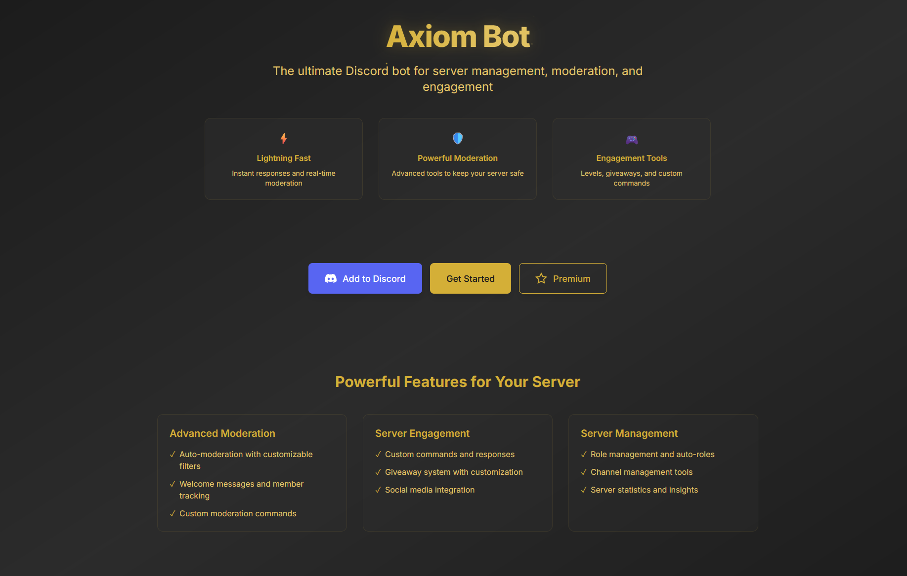
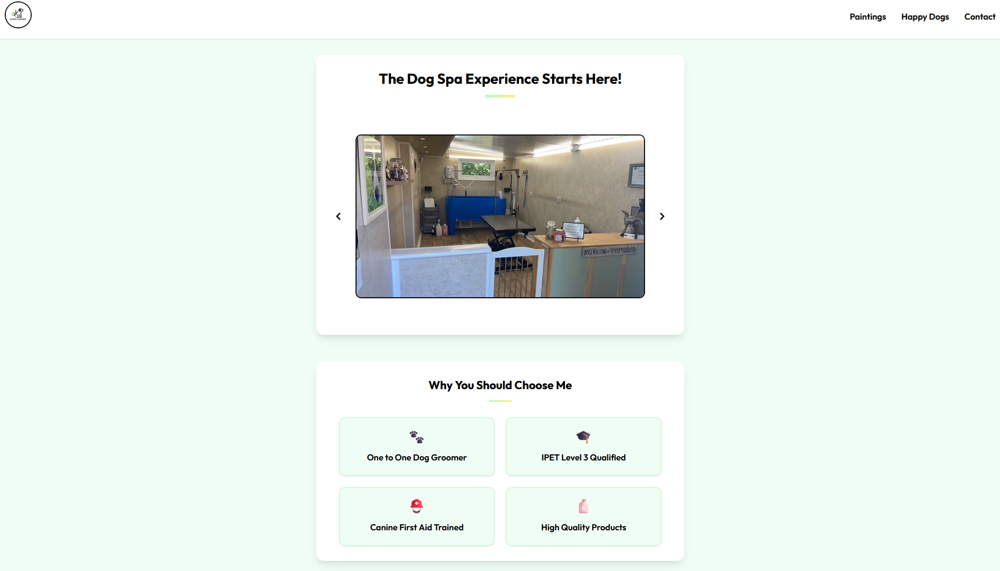

Hey, I'm Conor 👋
I'M A FULL STACK SOFTWARE DEVELOPER
About Me
My first encounter with how the web works was back in 2011 during my high school IT lessons, where I often experimented with changing the HTML and CSS of pages like Google with devtools, though I had no clue what that was exactly. I was regularly told to stop playing with the "inspect element tools" by my teacher, and would frequently ask me what I was trying to achieve, without a real answer and not knowing what I was looking at, I gave him a blank look every time. I enjoyed watching how my edits could alter the site's appearance. At the time, I had no idea this curiosity would turn into a lasting passion.
In late 2014, during my College Level 2 Diploma, we touched briefly on coding, and even though it was very basic (HTML & CSS), it captured my interest. Once I finished my Level 3 Diploma 2 years later, my enthusiasm for coding grew, and over the next few years, I pursued it as a hobby. I created small projects, personal homepages, showcases, and even a florist website for my Auntie around mid 2020.
Fast forward to late 2021, I was considering a career change. I took a very basic free course in coding, but at the time, I didn't pursue it further once it was completed, as it felt like I still didn't know enough with what I had learned from it.
In late 2023, a friend recommended Code Institute's Full Stack Software Development course. I was ready for a new direction, having spent years in various entry-level roles, and I realized I needed to seize the opportunity to build a more fulfilling career. I started my course in October 2023, and have finished as of October 2024.
My Experience
Full Stack Software Development Diploma
October, 2023 - October, 2024
In October 2023, I decided that I would like to take action and find my way into the Tech world. My friend had taken Code Institute's Full Stack Software Development course, and I wanted to have my own go at it. I finally plucked up the courage and signed up for the course, and it is now finished as of October 2024. I learned an absolute ton from this course, and it was both an amazing experience to deal with so much at once and also very much a struggle, which is a good mix. To see everything I've learned, feel free to take a look at my Github profile here!
Level 2 & 3 IT Diploma
September, 2014 - July, 2017
In September 2014, I enrolled in an IT program at my local college to explore the vast world of technology, which has always been my primary interest. The course had a broad focus, covering a variety of modules. We learned about the construction and functionality of PCs, dabbled in basic web development, ventured into game development using the Phaser engine, and even delved into the mathematical principles behind how GPUs operate within computers.
My Projects

UseAxiom
A powerful Discord bot built with TypeScript and PostgreSQL, designed to enhance server management and user engagement...

CleanCanines
A modern, responsive website for a local dog grooming business, built with HTML, CSS, and JavaScript to showcase their services...

Better You
Welcome to Better You, the social platform dedicated to anybody looking to further themselves...

Michelangelo
This website is an independent homage to the restaurant, created out of admiration for their very high quality and enjoyable food...

PassMint.me
This is a simple yet powerful password generator. It allows you to generate a random password with a length of your choice...


Flip Frenzy
This page is dedicated to your usual memory card flip game, but with a slight twist featuring a 16-bit theme...

Timmys
This is my Meditation, Mindfulness & Yoga website. My website is designed to plant a seed in people's brains...